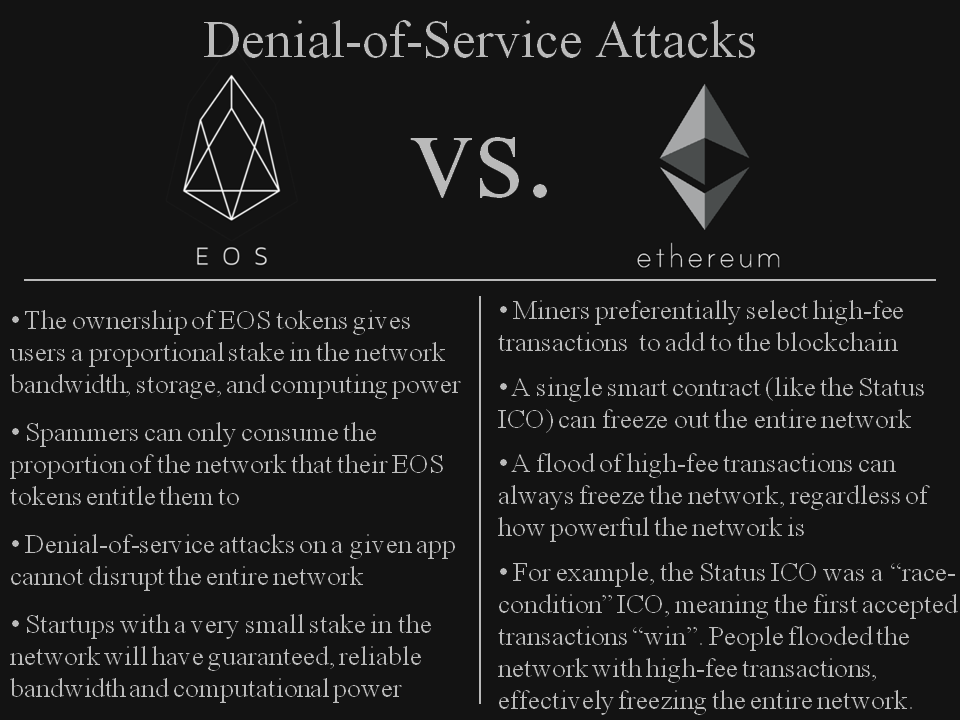

Bitcoin 方兴未艾，Ethereum异军突起，EOS突然之间成为网红词。今年年初，随着比特币价格的下跌，比特币和其他主流货币的热度正在下降。Ethereum凭借着DApp的新功能打开了一片天地。但是也由于它本身的一些限制。例如，在开发者的支持方面做到并不是那么友善，transaction确认时间过长，等等方面。使得其他的下一代区块链有了很多改进的空间。EOS就是这异军突起的一个新的区块链平台。最近EOS这个热门词汇听的比较多。忍不住对他进行了一些调查，并且比照Ethereum进行了对比。本文主要从技术的角度讨论一下两者的特点和各自的限制。
Ethereum 曾被誉为Bitboin之后区块链的继任者
在Bitcion进入人们视野后不久，很多人意识到作为区块链的特性，电子货币只是它的很小一部分的应用。区块链在其他的商用领域存在的巨大的潜力。在2013年末，加密货币的俄罗斯研究员和开发者 Vitalik Buterin 提出了 Ethereum。开发由2014年7月至8月期间的在线众筹，并将该系统在2015年7月投入使用。Ethereum 是一个开源的公有区块链。它的新功能是基于分布式计算操作系统的smart contract(distributed computing platform and operating system featuring smart contract (scripting) functionality)。Ethereum是建立在一套Turing-completeness的语言上的系统。这使得基于Ethereum进行进一步的应用开发成为了可能。
Ethereum采用了PoW，并在智能合约和分散式应用（dApp）平台空间中具有先发优势。 该平台作为目前排名第二高的区块链项目，因其高交易成本（市场利空市场中的高油价），低交易吞吐量（每秒约15笔交易）的缺乏可扩展性和交易确认的延迟而受到批评（ 6分钟完成交易），以及来自应用程序的网络上的低交易比率。虽然，它的交易确认时间，相对BitCoin动则2个小时甚至几天的时间要快了不少，但是距离使用者的预期还远远不够。
事实上，在比特币开发的短短几年内，不仅仅是Ethereum，同时有数十种新的分散式应用程序已经建立在公共分类账区块链技术上。这些分散的应用程序中只有少数包括加密消息（Bitmessage），分散交换（Bitshares），无信任赌博/博彩（Peerplays），云计算（Golem），当然还有社交媒体（Steem / Steemit）。
EOS 成为网红词
在2018年的时候，EOS似乎脱颖而出，成为了新的网红词。根据 COINTELEGRAPH 的报道，自2018初以来，“比特币”一词的搜索量已经下降了超过75%。除比特币外其他主流货币的搜索量也出现大幅降低，但EOS却相反，其谷歌搜索量在今年增长了97%。
我到Google Trend上进行了一些查询。区域选择在中国。今年4月份后，Bitcoin的热度明显下降。在4/29-5/5的时间点上，EOS的热度与Bitcoint持平，并且在之后的一段时间内超过了Bitcoin.
(某歌不是被墙了吗，这IoT到底怎么来的ε=ε=ε=(~￣▽￣)~)
把区域更换到美国的区域后，Interest over time发生了变化，EOS似乎并没有那么火。从2017/7 - 2018/7 的一年时间里，Bitcoin的搜索量占比非常高。EOS整年趴在2-3的一个很低的位置上。
用 2 分钟简单介绍EOS
既然出现了Ethereum，这么强有力的平台，后面还能出现EOS，必然有他的原因。存在即合理。
共识机制的问题
BitCoint的安全性是众所周知的，相对付出的代价，在比特币上一个transaction等待确认的时间也非常的长。Ethereum，采用了Bitcoin同样的共识机制PoW。并且Ethereum在这方面有所改进，正在向PoS进化。以期望在安全和等待交易确认时间上取得一个更好的平衡点。
但是这仍然成为了区块链新型商业应用模式的一个难点。利用PoW和PoS共识机制的情况下，网络和应用程序的安全性取决于大量的散列能力和/或大量的网络令牌分布。也就是需要大量矿工的参与。参与挖矿的人越多，整个区块链社区越安全。这一点， 对于小企业主和创业公司而言，创建自己的私有链成本非常高。一家小型创业公司无法独立资助广泛分布的强大计算机网络来保护其应用程序。
当然，其他共识机制，例如委托证明（DPOS）可以由相对较少数量的处理器操作而没有相同的网络安全问题，程序开发的易用性
想象一下，如果每个游戏设计师都必须从头开始专门构建运行游戏的框架，同时又需要优化游戏框架与系统之间的交互。最后才能开始实现自己的游戏内容。在面临巨大的开发工作量上面，十有八九这个游戏还没开始设计，开发人员就已经放弃了。
Ethereum不允许开发人员构建可扩展的消费级应用程序，这对区块链行业来说是一个巨大的问题。 在它的公共区块链空间中的大多数的使用者已经变成了投机者，矿工和骗子 - 这是零或负面的活动。 现在没有发生有意义的应用，商业或价值创造。
为了改善这些问题，Dan Larimer（Bitshares，Graphene和Steem / Steemit的发明者）和eos.io团队宣布开发EOS，这是一个共识的区块链操作系统，提供数据库，帐户权限，日程安排，身份验证，以及网络与应用程序底层支持。因此，EOS将为开发人员提供他们所需的开发工具和类库。应用程序开发人员，则专注于特定业务逻辑，而无需担心底层的实现。此外，EOS将使用并行化使区块链可扩展性可能达到每秒数百万个事务。它的目标是要成为一个可以支持商业级应用的去中心化的操作系统(decentralized operating system)。
- EOS 计划完全免除交易费用
- EOS声称设计目标是有能力支持每秒钟百万级的交易(millions of transactions per second)
Ethereum vs EOS - Design philosophy
Ethereum与EOS的区别之一是Design philosophy。打个比方，Ethereum 更像是一个LINUX，而EOS更像是WINDOWS。
Ethereum
Ethereum是一个应用无关的平台。它设计为可以适用于任何潜在应用程序的中立平台。
We Have No Features: as a corollary to generalization, we often refuse to build in even very common high-level use cases as intrinsic parts of the protocol, with the understanding that if people really want to do it they can always create a sub-protocol (eg. ether-backed subcurrency, bitcoin/litecoin/dogecoin sidechain, etc) inside of a contract. An example of this is the lack of a Bitcoin-like “locktime” feature in Ethereum, as such a feature can be simulated via a protocol where users send “signed data packets” and those data packets can be fed into a specialized contract that processes them and performs some corresponding function if the data packet is in some contract-specific sense valid.
在开发的过程中，大家应该也有这方面的感受。Ethereum具有“no feature”，它拒绝构建“甚至非常常见的高级用例作为协议的内在部分”。这个基本原理减少了应用程序之间的膨胀，但它还需要许多不同的应用程序来重用代码，如果平台本身提供某些更常见的功能，那么应用程序开发人员的效率增益当然可以实现。
EOS
与之相反，EOS认识到许多不同的应用程序需要相同类型的功能，并寻求提供这些功能，例如许多应用程序所需的加密功能，app与区块链的通信功能，都提供拉API的实现。 有了这个理念，EOS将引入基于角色的通用权限，用于界面开发的Web工具包，自描述接口，自描述数据库方案和声明性权限方案。 在我认为，EOS提供的这些功能对于简化用户帐户生成和管理以及声明权限和帐户恢复等安全问题特别有用。
Consensus mechanism and governance
Ethereum与EOS之间的另一个重要区别在于区块链共识机制和治理方法。Ethereum目前使用PoW，并且很快转换为混合模式 hybrid PoW/PoS。EOS将使用利用委托证明（DPOS）共识机制的石墨烯技术。这种选择对商业可扩展性具有重要意义。
打个比喻，Ethereum就像自由世界，什么事情都得自己来，出了问题要自己兜着。EOS就像把一部分事情托管给物业的高端小区。很多事情有物业做，业主给物业付钱，社区也有这自己的一些规则和限制。
Ethereum
Ethereum 目前采用PoS的共识机制，它使用了 Ethash 算法。Ethereum 上面每个区块产生的时间约为 14-15秒，而Bitcoin上产生区块的时间为10分钟。在Ethereum上发生的transaction会被打包到区块上。区块产生之后，会被挂在之前的区块链上。由于区块产生的时间比较短，考虑到网络因素，同一时间在某个遥远的地方可能有另外一台机器也计算出来了一个合法的区块。所以Ethereum比较Bitcoin更容易发生软分叉。为了解决这个问题，Ethereum提出了其他的机制来确保这个网络的共识机制，相对还是非常安全的一种共识机制。
安全与交易确认速度是一个事物的两面。要安全，交易速度就会慢。要速度快，就要承担安全方面的风险。
Ethereum去中心化的平台，它上面的没有个节点都是平等的。这是区块链的核心思想。但是也造成了一些问题。例如，之前DAO遇到了 严重的错误，黑客攻击，failure。值得注意的是，那些具有“code-is-low”心态的人认为DAO黑客是一个“功能”，而不是failure，并且使用者应该更加负责地更加谨慎地理解代码。它上面的代码一旦发布，基本上是不可能进行修改。这意味这即使查明了一段代码的bug, 要进行bug的修复是非常困难的事情。因为，对任何以及完成transaction做修改。需要得到整个网络上绝大多数节点的同意，rollback到之前的某个区块上。这个区块越靠上，代价越大。除非是再次发生了类似与Ethereum Classic分裂的这种重大事件。
EOS
EOS 采用的是 DPoS机制。这个机制是用来解决Ethereum没14-15秒才能产生一个区块的问题。用一个简单的角度来描述DPoS是怎么运作的。
- 想象一下有200个人来帮助确认区块链上的每一笔交易。这些人被称为 “Witnesses”。
- 由于区块链是一个去中心化的，那么EOS的investors需要通过投票来决定谁才是他们认为的Witness。
- 每个investor的投票的权重来自于他所拥有的EOS Coin。这就是所谓的”Stake”。俗称，有钱人说的算。
- 这200个Witnesses的工作就是保证网络的安全，验证每笔交易，预防发生分叉。他们也会因此而得到EOS Coin。
- 200 个 Witnesses 并不是固定的，后面有一大堆人排着队等着来轮到他们机会的到来，可以挣到钱。
- 如果有些Witnesses并没有做好他们的工作。那么就有可能被投票“踢”出局。从排队的队伍中找到合适的人选。
基本上，这就是DPoS的运作方式，有效，快速并且廉价。事实上，目前为止，只需要3秒就可以打包生成区块。比BitCoin(10分钟)，Ethereum(15秒)快了不少。
Ethereum需要绝大多数的Node确认一笔交易的完成，才能算是一笔交易真真的完成了。而EOS只需要这Witness Nodes确认即可。
另外，EOS包括一种冻结和修复破碎或冻结应用程序的机制。例如，如果DAO已在EOS上实现，则可以在不中断其他EOS应用程序的情况下对其进行冻结，修复和更新。此外，EOS的DPOS共识机制在硬分叉期间不可能产生多个竞争链。这可以通过Steem网络经历的18个成功的硬叉证明，该网络也运行在石墨烯技术上。此外，EOS将包括一项具有法律约束力的宪法，该法案为争议解决建立了共同的管辖权，并且还将包括将通过股权加权投票选择的自筹资金的社区福利申请。
Scalability

为了将平台支持商业运作，可扩展性至关重要。这是EOS和以太坊不同的一个关键领域。目前，以太坊网络受到CPU的单线程性能的限制。早期的测试网络每秒实现25次交易（在某些优化条件下），通过优化可能会增加到 50-100 tx/s。但是，在实际应用程序的负载下，以太坊网络的事务处理能力可能只有 10 tx/s 或更低。在过去，网络已经不堪重负，交易超负荷，除了收费最高的交易之外的所有交易都被拒绝了。这在最近的初始硬币产品中尤其明显，例如状态ICO，其中网络完全不堪重负并且ETH令牌遭受了大规模的闪存崩溃。
虽然，Vitalik Buterin已经制定了“无限可扩展性”的路线图，该路线图严重依赖于分片(sharding)的概念。有专家认为，分片是一个技术上具有挑战性的概念，肯定会增加网络的复杂性和攻击面，并可能降低网络的安全性。所有分片实际上能达到的效果，还未可知。
就可扩展性而言，EOS将比Ethereum具有两个显着优势，一旦实施，EOS有能力成为能够处理真正商业规模分散应用的平台。首先，EOS将依赖石墨烯技术，该技术已在压力测试中显示，每秒可实现10,000-100,000次交易。其次，EOS将使用并行化来扩展网络，每秒可能达到数百万次交易。如果实现这些基准，EOS应该能够支持数千个商业规模的DAPP。 EOS将使用异步通信和单独的身份验证来实现加速，并且因为它没有交易费用，EOS也不需要计数操作。
DDOS
企业级服务的绕不开的安全问题就是拒绝服务攻击。此类攻击是指恶意攻击者通过流量向网络发送垃圾信息以妨碍合法请求通过。太坊网络曾经遭受过这种DDOS攻击，而EOS, 因为有Block Producer的存在，从设计上能够对这种攻击进行有效的防范。

Ethereum
在DevCon 2的早上，有一个针对Geth客户的黑客攻击。Ethereum开发人员迅速做出反应，fixed了这个问题，但没过几天又发生了另一次攻击。第二次攻击持续了一个多月。作为回应，Ethereum开发者进行了两次硬分叉：Tangerine Dream（EIP150）和Spurious Dragon（EIP 161）。这次硬叉并没有改变现有数据。而是改变了客户端代码的工作方式，在交易结束时，如果帐户在该交易期间被 “touched”，而且该帐户最终会“终结” ，则该帐户交易完成时会被删除。攻击者在分叉之前在数千个事务中创建了数百万个无用的帐户。 在这次硬叉前，实际上并没有直接删除这些以及终结的帐户，因此启动了一个off-chain process以“touch”这些帐户，然后将其删除。
Basically, it’s a quadratic attack where the culprit this time is a series of SUICIDE calls followed by a DELEGATECALL tower. SUICIDE creates dirty objects much more cheaply than any other opcode, and this creates a memory blowup. We have identified two possible fix strategies and are starting work on implementing them.
虽然 Ethereum 最终Fixed了这个DDOS的问题。不过修复时间非常长，而且需要各个Node的配合才能进行修复。这一点，在企业级的应用中，是非常难以适应的。
EOS
相比之下，EOS不易受到DOS攻击（至少理论上是的）。 EOS令牌的所有权为用户提供了与网络带宽，存储和计算能力成比例的利益。 因此，垃圾信息制造者只能消耗他们的EOS令牌赋予他们的网络比例。 在某些特定的应用程序上可能有DDOS攻击，具体取决于应用程序设计，但这些攻击永远不会破坏整个网络。 即使许多其他恶意行为者试图向几个大型网络应用程序发送垃圾信息，在网络中投入非常小的股份的初创公司也将拥有有保证的可靠带宽和计算能力。
Reddit 上面有人做了非常有趣而形象的回答
I suggest you give the link your posted another read. Lets do some pretend numbers,
- Bps say they can do 100,000,000 bandwidth units
- I control & stake 1000 tokens and are therefore entitled to 1/1,000,000 of that bandwidth = 100 bandwidth units.
- I maliciously ddos your contract with 100 bandwidth units worth of transactions
- bps : “cool”
- If i ddos you with more than I am entitled to, the bps will just say no - but they must have cloudflare or other ddos measures in place so I can’t flood them. If you can ddos all of the 120 bps to stop the network, well done you deserve all of your ill gotten loot.
最近，Steve Floyd 提到了 EOS 可能会遭遇的 DDOS攻击，以及可能的解决方案 - Addressing DDOS Risks at EOS Launch
Economics of the networks: burning fees vs. owning a stake
两个平台的区别之一，还在于他们完全不一样的收取费用的机制。
Ethereum
Ethereum 类似于按次收费的模式。在使用Ethereum时，需要gas来换取chain上面的每次计算，存储操作和带宽利用率。 此外，由于矿工优先选择gas最高的交易，所需费用会出现波动并且可能高得惊人。 这在最近的状态ICO期间尤其明显，出现过即使贴了相当于100美元的gas仍然显得太小，即使对于琐碎的交易也是如此。 在这种场景中，富有的参与者可以通过高收费交易快速征用整个网络的算力。 此外，该模型要求开发人员和初创公司在其应用程序的开发和部署过程中不断燃烧gas。
EOS
相比之下，EOS将使用所有权模型。其中持有EOS Token, 按照比例的为用户提供网络带宽，存储和处理能力。 这意味着如果有人拥有1％的EOS Token，他们将始终可以访问1％的网络带宽，无论网络其余部分的负载如何。 通过这种方式，小型初创公司和开发人员可以购买相对较小的网络部分，以便获得可靠，可预测的网络带宽和计算能力，并在需要扩展其应用程序时购买更多EOS Token。 此外，由于网络将没有交易费用，除了最初购买EOS令牌之外，没有网络开发成本。 然而，当然可以出售这些以便在需要时收回初始投资。
总结
Ethereum 依然是个非常 强有力的Public BlockChain的平台，虽然已经出现了很多声称 “Ethereum Killer” 的新平台，目前还没有看到他真正过时的迹象。EOS 凭借这他独特的设计和特点，已经在成为后起之秀。
两者的区别，简单的打个比方。Ethereum 是个更加开源的，更加自由的平台，缺点就是，什么事情都要自己来。 EOS是一个, 相对 Ethereum，更加 centrialize 的平台。它雇佣了多个BP来为管理平台的一部分事务，平台用户则是stake holder，拥有stake的多少，决定了他的话语权。